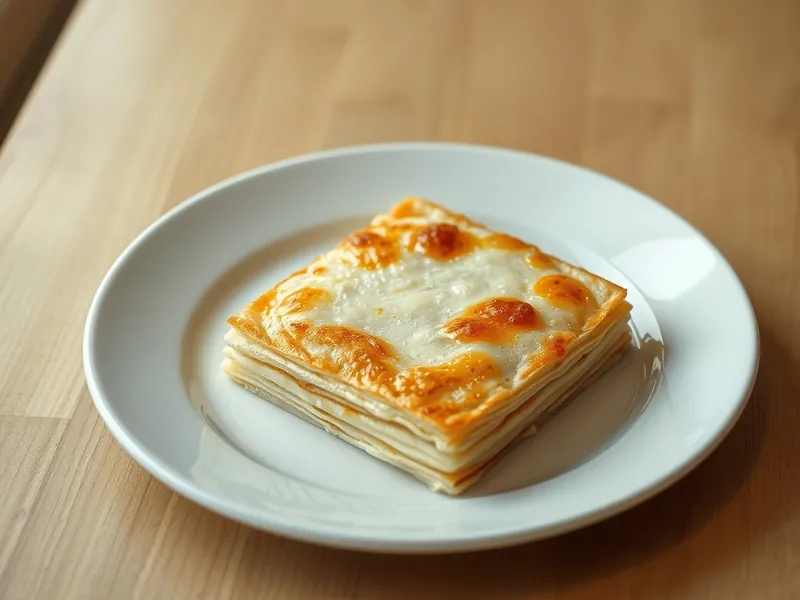

Ленивая ачма из лаваша
Грузинский сырный пирог из тонкого лаваша с сулугуни, кефиром и маслом
30 мин4 порц.531 ккал на порциюБ 24 · Ж 31 · У 40Кавказская кухня
Открыть в приложении: порции, таймеры, список покупок
Продукты на 4 порц.
- Лаваш тонкий3 шт
- Сулугуни250 г
- Кефир200 мл
- Яйцо куриное2 шт
- Сливочное масло50 г
- Соль1 щеп.
Как готовить
- Включите духовку на 200 °C (сильный жар). Натрите сулугуни, растопите сливочное масло, 3 минуты.
- Взбейте яйца с кефиром и щепоткой соли, 1 минуту.
- Смажьте форму маслом, положите один лаваш так, чтобы края свисали.
- Рвите второй и третий лаваш на большие куски, каждый окунайте в кефирную смесь и выкладывайте в форму слоями, пересыпая сыром.
- Заверните свисающие края, залейте остатками смеси и полейте растопленным маслом.
- Запекайте 20 минут при 200 °C (сильный жар), пока верх не станет румяным, а смесь внутри не схватится.
Совет. Сулугуни можно наполовину заменить брынзой или адыгейским сыром, тогда соль не нужна. Дайте ачме постоять 5 минут, чтобы она ровно нарезалась.